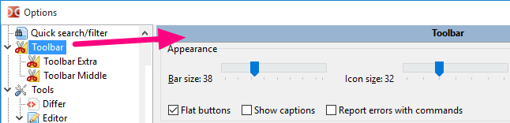
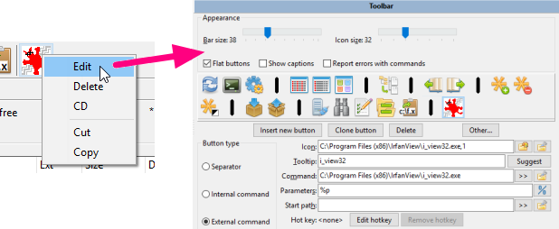
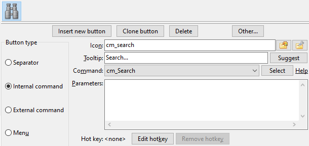
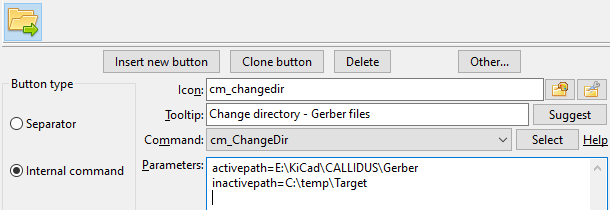
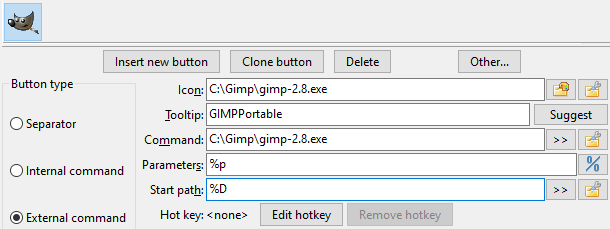
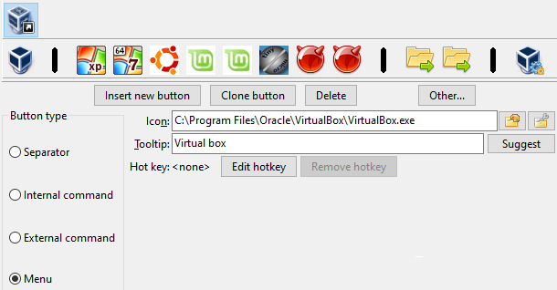
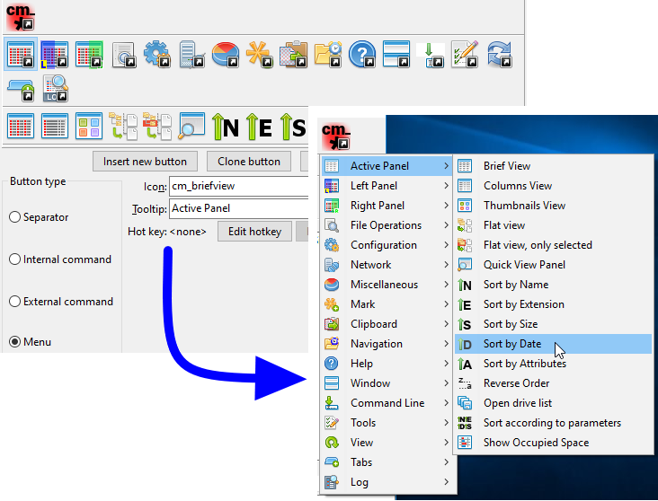

When working heavily with two-panels file manager like Double Commander, it comes a time that it would be more useful to launch the application we're using directly from our manager instead of having to reach a shortcut on the desktop, in a task bar or in a start menu.
This is especially true for task we do often.
The idea of the toolbar it to allow each one to customize buttons inside a bar for functions we need to do often.
Double Commander proposes also to use numerous possible parameters based on current displayed/selected files to allow us to pass them as parameters to the application to launch.
Here follows the default toolbar of DC shown above the file panels after a default installation. But don't worry: you may configure it the way you want to adapt to your need and your taste.

The toolbar will be displayed or not depending of what is set in the Layout configuration settings.
To activate it, we just make sure we've set the Show toolbar option.

Here is a table of what may be present into a toolbar
| Possible element inside a toolbar | |
|---|---|
| Elements | Description |
| Vertical bar to help us to group together similar functions and/or similar context. | |
| To invoke internal command present in Double Commander. | |
| To launch external application, executable, script, etc. | |
| To configure other toolbar element that will be displayed as drop menu from the main toolbar. | |
To configure what will be present in our toolbar, we will need to configure it.
We may certainly go to the main configuration of Double Commander, scroll in the left column and select "Toolbar" and we'll have access to it.

The other quick way to reach the configuration is to directly right click in an empty area of the toolbar and select Edit.

As we're getting familiar with the toolbar, we'll also probably right click directly on a button from the toolbar to not only open the toolbar editor but beeing ready to immediately edit the associated action of the toolbar button we've right clicked on.

In addition, the context menu allows to delete the selected button, cut or copy to the clipboard or insert a button from the clipboard.
We can also change the order of the toolbar elements without opening the settings window: Double Commander supports dragging buttons with the mouse while holding down the Shift key.
The separator is simply a vertical bar that may be used to separate group of buttons to have similar related actions grouped together.
There have no real active functions, it's just decorative for pleasant looking.
In the following example, the person used separator to isolate together functions related with comparisons, then the ones related with clipboard, etc.
The internal commands are related with actions made directly by Double Commander that doesn't need to call an external application.
The commands are extremely varied. Please see this page which is dedicated to described all the internal commands.
For example if we want a toolbar button to allow to launch a search, we'll just select the cm_Search command from the drop box of command.
As we see in the following image, we may select a custom icon for it but generally just choosing the command from the drop box of command is enough and command already have an internal associated icon.
The tooltip is also there to allow us to write an easy to remember little words to remember us the task of the button as we move cursor over.
Here is an example with that cm_Search command:

Some internal commands might accept parameters to configure their actions. When this is required, we'll simply write the parameter for in the parameter box: most parameters must be added as parameter=value (unless otherwise stated), each must be in a separate line, without quotes and other ways of escaping special characters and spaces.
In the following example, we use the internal command cm_ChangeDir and we're providing two parameters to indicate which directory to load and show in each panel.

The external commands are related with actions that require to call external program.
For the external commands we have the possibility to set a few more settings that will allow us to configure precisely the command we want to launch, in which directory we want to launch it and what we want to provide as parameters, if necessary, to the commands.
The "Command" field is for the executable file only (as is, without quotes): we can specify the file name or the file name with the full path, we can also use environment variables.
Regarding the parameters, we may select user variables that will be substituted by their actual value based on the current selected file of the active panel and so on. See the dedicated page of the possible variable to use as parameter under this link (please note the use of quotation marks). To run a command in the terminal, we can use the variables %t0 and %t1.
In the following example, we've set a toolbar button to launch the application GIMP and the %p as parameter means that when we click the button to launch GIMP, the complete filename of the current selected file in the active panel will be passed as parameter, since that's what %p stands for.

If we do not need to explicitly specify the working directory, then we can leave the "Start Path" field empty, in this case, the working directory will be the current directory of the active file panel.
If we're configuring a lot of toolbar button, we may run out of space to have all our buttons on the same horizontal line.
So to allow us to add more buttons, we may add a special button type that will make appear a drop menu below the button to give us access to something similar to a toolbar of buttons but presented as a drop menu.
See the following example where we added a button type of "Menu".
This will make appear a new sub toolbar below that we can populate as we needed with new toolbar buttons pointing to different tasks.
This example also shows us that it could help to group together buttons related to the same projects, the same areas.
In this example the sub toolbar has functions related with different type of OS's installed in virtual machines.

Below is displayed how the configured sub toolbar will appear in the application:
The sub toolbar configured this way may contains the same type of button type presented before.
We may even have a sub toolbar inside a subtoolbar and so on.
This will simply be displayed in the application as a sub menu from a menu element.
See below an example:
